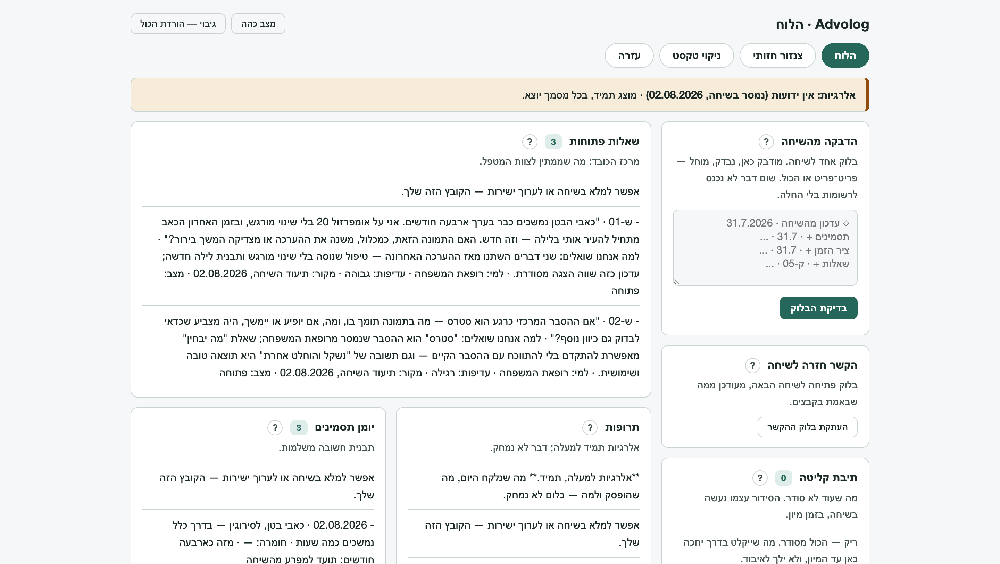

מדריכי התקנהSetup guides
כל מדריך עומד בפני עצמו. לא בטוחים מאיפה להתחיל? Claude או ChatGPT — מה שכבר יש לכם. Each guide stands alone. Not sure where to start? Claude or ChatGPT — whichever you already have.
התקנה ב־ClaudeSetup in Claude
יש שתי דרכים טובות, ולא צריך לבחור מראש נכון: אפשר להתחיל בקלה ולעבור אחר כך — הרשומות עוברות איתכם. There are two good ways in, and no need to choose right the first time: start light and move later — the records move with you.
דרך א — פרויקט באתר (claude.ai)Way one — a project on claude.ai
- נכנסים ל־claude.ai ומתחברים לחשבון (חינמי מספיק להתחלה).Go to claude.ai and sign in (the free tier is fine to start).
- בתפריט הצד: Projects ← New project. שם חופשי — למשל «התיק הרפואי שלי».In the side menu: Projects ← New project. Any name — "My medical file," for example.
- בהגדרות הפרויקט מאתרים את אזור ההנחיות (Instructions).In the project settings, find the instructions area.
- מדביקים שם את כל התוכן של
package/prompts/core-map.md.Paste the entire content ofpackage/prompts/core-map.mdthere. - באזור הקבצים (Project knowledge) מעלים את קובצי
package/prompts/skills/ואת שלושת קובציpackage/he/— אפשר לגרור את כולם יחד.In the project files area (Project knowledge), upload thepackage/prompts/skills/files and the threepackage/he/files — drag them all at once. - שיחה חדשה בתוך הפרויקט, וכותבים שלום — או פשוט מתחילים לספר. הריאיון יוביל משם, שאלה אחת בכל פעם.Open a new chat inside the project and say hello — or just start telling. The interview leads from there, one question at a time.
חלופה בלי שום התקנה: שיחה רגילה + הדבקת פרומפט הפתיחה. גרסה קלה ושלמה, בלי קבצים. The no-install alternative: a regular chat + pasting the starter prompt. A light, complete version, no files.
איפה הרשומות? קובצי הרשומות נשמרים אצלכם במחשב, בתיקייה אחת שבחרתם, והשיחה מלווה כל שמירה — או שפותחים את dashboard.html מאותה תיקייה והוא מכניס את העדכונים בלחיצה (מדריך הלוח). בנייד אפשר לנהל את הגרעין בתוך השיחה ולהעביר לקבצים כשמגיעים למחשב.
Where are the records? The record files live on your machine, in one folder you choose, and the conversation walks every save with you — or open dashboard.html from that folder and it applies updates on a click (dashboard guide). On mobile, keep the seed in the conversation and move it to files at a computer.
דרך ב — תיקייה במחשב (Claude Code / Cowork)Way two — a folder on your computer (Claude Code / Cowork)
- מתקינים את אפליקציית Claude למחשב (או Claude Code) ומתחברים.Install the Claude desktop app (or Claude Code) and sign in.
- מחלצים את חבילת ההורדה אם עוד לא (חשוב: לחלץ באמת — לחיצה ימנית ← «חלץ הכול» בווינדוס, לחיצה כפולה במק. אם רואים את הקבצים בתוך חלון של תוכנת מכווץ — זה עדיין בתוך ה־zip).Extract the downloaded package if you have not (really extract: right-click ← "Extract All" on Windows, double-click on Mac. Files showing inside an archive-tool window are still inside the zip).
- שמים את תיקיית
packageאיפה שנוח (מסמכים, למשל) — אפשר לשנות לה שם.Put thepackagefolder somewhere comfortable (Documents, say) — renaming it is fine. - פותחים את Claude על התיקייה הזאת (Open folder / עבודה על תיקייה).Open Claude on that folder (Open folder).
- כותבים שלום. העוזרת קוראת את המפה בעצמה, והריאיון מתחיל. מהרגע הזה היא גם שומרת את הרשומות ישירות בתיקייה — כל שמירה מוכרזת בשורה רגועה אחת.Say hello. The assistant reads the map herself and the interview begins. From that moment she also saves the records directly into the folder — each save announced in one calm line.
יחידות מיומנות: בסביבה הזאת אפשר גם «להתקין» יחידות כך שיופעלו אוטומטית. אין צורך מראש: כשיחידה תהיה רלוונטית, העוזרת תציע ותלווה את ההתקנה צעד־צעד. Skill units: this environment can also "install" units so they trigger on their own. Nothing to do up front: when a unit becomes relevant, the assistant offers it and walks the install step by step.
שיחה חדשה בתוך הפרויקטA new chat inside the project
שיחות ארוכות נעשות כבדות, ומדי פעם העוזרת תציע דף נקי. באתר: נכנסים לפרויקט ← New chat בתוכו. במחשב: שיחה חדשה על אותה תיקייה. בשני המקרים מילה אחת מספיקה: «תתעדכני» — והיא תספר איפה עמדנו. Long conversations get heavy, and now and then the assistant will suggest a clean page. On the web: open the project ← New chat inside it. On the desktop: a new chat on the same folder. Either way one word is enough: "catch up" — and she will say where things stood.
התקנה ב־ChatGPTSetup in ChatGPT
אותה חבילה, אותם קבצים, אותם כללים — הכלי נבנה מודל־אגנוסטי. Same package, same files, same rules — the tool is built model-agnostic.
פרויקט (Projects)A project
- נכנסים ל־chatgpt.com ומתחברים.Go to chatgpt.com and sign in.
- בתפריט הצד: Projects ← פרויקט חדש. שם חופשי.Side menu: Projects ← new project. Any name.
- בהגדרות הפרויקט מאתרים את שדה ההנחיות (Instructions) ומדביקים את כל
package/prompts/core-map.md. אם השדה קצר מדי — מעלים את המפה כקובץ, ובשדה כותבים שורה אחת: «קראי את core-map.md במלואו לפני כל תגובה ופעלי לפיו; על כל סתירה — המפה קובעת». In the project settings, find the Instructions field and paste all ofpackage/prompts/core-map.md. If the field is too short — upload the map as a file, and put one line in the field: "Read core-map.md in full before any reply and follow it; on any conflict, the map wins." - מעלים לקובצי הפרויקט את חמישה־עשר קובצי
package/prompts/skills/ואת שלושת קובציpackage/he/.Upload the fifteenpackage/prompts/skills/files and the threepackage/he/files to the project. - שיחה חדשה בתוך הפרויקט — ומתחילים לדבר. אין נוסח פתיחה נכון.A new chat inside the project — and start talking. There is no correct opening line.
חלופה בלי שום התקנה: שיחה רגילה + פרומפט הפתיחה. The no-install alternative: a regular chat + the starter prompt.
הערה חשובה על «זיכרון» (Memory)An important note on Memory
ל־ChatGPT יש זיכרון חוצה־שיחות. לרשומה רפואית עדיף מקור אמת אחד — הקבצים שלכם: בבדיקות שלנו זוהה מקרה שבו ידע כללי «מהזיכרון» התערבב בטענות ממקורות, וההנחיות דורשות שכל מספר וסף יגיעו רק ממקור שנשמר באותה ריצה. לשקט נפשי אפשר לכבות זיכרון לשיחות האלה (Settings ← Personalization ← Memory) או להשתמש בפרויקט ייעודי. הבחירה שלכם; העיקרון — הרשומה גוברת על הזיכרון. ChatGPT has cross-conversation memory. A medical record wants one source of truth — your files: our testing caught a case where general "memory" knowledge blended into sourced claims, and the instructions require every number and threshold to come only from a source retained in that run. For peace of mind, turn Memory off for these conversations (Settings ← Personalization ← Memory) or use a dedicated project. Your choice; the principle — the record outranks the memory.
שיחה חדשה בתוך הפרויקטA new chat inside the project
Projects ← הפרויקט שלכם ← New chat בתוכו. מילת פתיחה: «תתעדכני». Projects ← your project ← New chat inside it. Opening word: "catch up."
הלוח — המדריך המלאThe dashboard — the full guide
הלוח הוא קובץ אחד בשם dashboard.html שיושב בתיקיית הרשומות שלכם. הוא לא אתר, לא אפליקציה להתקנה ולא שירות: פותחים אותו בדפדפן, והוא מראה מה יש ברשומות ומכניס לתוכן עדכונים מהשיחה — רק אחרי שאישרת. הכול קורה אצלכם במחשב. שום דבר לא נשלח לשום מקום, אף פעם: אין רשת, אין חשבון, אין שרת.
The dashboard is one file named dashboard.html sitting in your records folder. It is not a website, not an app to install, not a service: you open it in a browser, it shows what is in the records and applies updates from the conversation — only after you approve. Everything happens on your machine. Nothing is ever sent anywhere: no network, no account, no server.
חשוב לומר כבר עכשיו: הלוח הוא נוחות, לא חובה. הכול עובד גם בשיחה בלבד. אם משהו כאן מרגיש מסובך, אפשר פשוט להמשיך לדבר עם העוזר והוא ילווה כל שמירה, קובץ אחד בכל פעם. Worth saying up front: the dashboard is a convenience, not a requirement. Everything also works in conversation alone. If any of this feels complicated, just keep talking to the assistant and it will walk every save with you, one file at a time.
איך זה בנויHow it is built
הרשומות שלכם הן קבצי טקסט פשוטים בתיקייה אחת: תרופות, ציר זמן, יומן תסמינים, שאלות פתוחות ועוד. אפשר לפתוח כל אחד מהם בכל עורך טקסט, בלי שום תוכנה מיוחדת, והם קריאים לבני אדם. השיחה עם העוזר היא המוח: שם מספרים מה קרה, שואלים שאלות, מכינים דוחות. הלוח הוא החלון והידיים: מראה מה כתוב, ומכניס את מה שהשיחה הציעה. Your records are plain text files in one folder: medications, timeline, symptom log, open questions, and more. Any text editor opens them, no special software, and they read as human documents. The conversation is the brain: there you tell what happened, ask questions, prepare reports. The dashboard is the window and the hands: it shows what is written, and applies what the conversation proposed.
החלוקה הזאת מכוונת. השיחה אף פעם לא נוגעת בקבצים שלכם בעצמה; היא מציעה, ואת או אתה מחליטים. שום דבר לא נכנס לרשומות בלי לחיצת אישור שלכם. That split is deliberate. The conversation never touches your files itself; it proposes, and you decide. Nothing enters the records without your approving click.
החיבור הראשון, צעד אחר צעדThe first connection, step by step
- ודאו שהקובץ יושב בתיקיית הרשומות. אם הורדתם את החבילה כקובץ מכווץ (zip), חשוב לחלץ אותה קודם: לחיצה ימנית על הקובץ ← «חלץ הכול» (בווינדוס) או לחיצה כפולה (במק). אם רואים את
dashboard.htmlבתוך חלון של תוכנת מכווץ — זה עדיין בתוך ה־zip, וזה לא יעבוד משם. אחרי החילוץ תהיה תיקייה רגילה, ובה הקובץ. Make sure the file sits in the records folder. If the package came as a zip, extract it first: right-click ← "Extract All" (Windows) or double-click (Mac). Ifdashboard.htmlshows inside an archive-tool window — it is still inside the zip and will not work from there. After extraction there is a normal folder with the file in it. - פתחו את הקובץ בדפדפן שתומך בגישה לתיקיות — כרום, למשל. לרוב מספיקה לחיצה כפולה. אם נפתחה תוכנה אחרת: לחיצה ימנית ← «פתח באמצעות» ← הדפדפן. Open the file in a folder-capable browser — Chrome, for instance. A double-click usually does it. If another program opened: right-click ← "Open with" ← the browser.
- לחצו «בחירת התיקייה» ובחרו את התיקייה שבה יושב הקובץ — היא תיקיית הרשומות. הדפדפן ישאל אם לאשר גישה; זה האישור היחיד שהלוח צריך, והוא נשאר בתוך המחשב שלכם. אפשר גם פשוט לגרור את התיקייה אל החלון. Click "choose the folder" and pick the folder the file sits in — that is the records folder. The browser asks to approve access; that is the only approval the dashboard needs, and it stays inside your machine. Dragging the folder onto the window works too.
- זהו. שבעת קובצי הרשומות נוצרים אם הם עוד לא קיימים, ונקראים אם הם כבר שם. מהרגע הזה הלוח מציג את מה שבאמת כתוב בקבצים. That is it. The seven record files are created if they do not exist yet, and read if they do. From that moment the dashboard shows what is really written in the files.

אם הדפדפן לא תומך בגישה לתיקיות (פיירפוקס וספארי, נכון לעכשיו) — הלוח יגיד את זה בפשטות. זה לא מצב שבור: השיחה מלווה כל שמירה בעצמה, קובץ אחד בכל פעם, וזה מסלול מלא לכל דבר. שני כלי הפרטיות שבלוח עובדים בכל דפדפן גם בלי חיבור. If the browser does not support folder access (Firefox and Safari, as of now) — the dashboard says so plainly. That is not a broken state: the conversation walks every save itself, one file at a time, and that is a full path for everything. The two privacy tools work in any browser, connection or not.
מעגל העבודה — פנימה והחוצהThe working loop — in and out
פנימה. בסוף שיחה (או כשמבקשים «תני לי בלוק עדכון»), השיחה נותנת בלוק טקסט אחד עם כל מה שחדש. מעתיקים, עוברים ללוח, מדביקים בפאנל «הדבקה מהשיחה» ולוחצים «בדיקת הבלוק». כל פריט מוצג בנפרד: מה הוא ולאן הוא הולך; מחילים פריט־פריט או «החלת הכול». עד שלא לחצתם החלה — שום דבר לא נכתב. In. At the end of a conversation (or on "give me an update block"), the conversation hands one text block with everything new. Copy it, switch to the dashboard, paste into the "paste from the conversation" panel, click "check the block." Each item shows separately: what it is and where it goes; apply item by item or "apply all." Until you click apply — nothing is written.
◇ עדכון מהשיחה · 31.7.2026 תסמינים + · 31.7 · כאב ראש, בינוני, אחרי צהריים ציר הזמן + · 31.7 · ביקור אצל רופאת המשפחה שאלות + · ק-05 · האם שווה בדיקת דם נוספת · כי החולשה נמשכת
כל שורה מתחילה בשם היעד (תסמינים, ציר הזמן, תרופות, שאלות, תיבת קליטה, פרופיל או ממצאים), אחר כך + ·, ואחר כך השורה עצמה — בדיוק כפי שתיכנס לקובץ. הדבקתם והלוח אומר שלא זוהו שורות? הכי פשוט לבקש מהשיחה: «תני לי את הבלוק שוב, בתבנית של הלוח». אם החלה נכשלת (למשל כי התיקייה זזה), הפריט נשאר ממתין ולא הולך לאיבוד.
Every line starts with the target name (symptoms, timeline, medications, questions, intake box, profile, or findings), then + ·, then the line itself — exactly as it will land in the file. Pasted and the dashboard says no update lines found? Simplest ask: "give me the block again, in the dashboard's format." If an apply fails (say the folder moved), the item stays pending and is not lost.
החוצה. בפתיחת שיחה חדשה, לוחצים «העתקת בלוק ההקשר» ומדביקים בהודעה הראשונה. השיחה מקבלת תמונת מצב קצרה ויודעת להמשיך בדיוק מאיפה שעצרתם. Out. When opening a new conversation, click "copy the context block" and paste it as the first message. The conversation gets a short snapshot and picks up exactly where you stopped.
סיור בפאנליםA tour of the panels
- הדבקה מהשיחה — הלב. הבלוק נבדק כאן ומוחל בלחיצה. ליד כל פאנל כפתור «?» עם הסבר במקום.Paste from the conversation — the heart. The block is checked here and applied on a click. Every panel has a "?" button with help in place.
- הקשר חזרה לשיחה — התנועה ההפוכה, בלחיצה אחת.Context back to the conversation — the reverse motion, one click.
- תיבת קליטה — מה שנקלט ועוד לא סודר. המיון קורה בשיחה, כשנוח.Intake box — what was captured and not yet sorted. Sorting happens in conversation, when convenient.
- שאלות פתוחות — מרכז הכובד: מה שממתין לצוות המטפל, כל שאלה עם הנימוק שלה.Open questions — the center of gravity: what waits for the care team, each question with its reasoning.
- תרופות — האלרגיות תמיד בראש הקובץ ותמיד בפס העליון. דבר לא נמחק; גם מה שהופסק נשאר, עם הסיבה.Medications — allergies always top the file and the top strip. Nothing is deleted; stopped items stay, with the reason.
- יומן תסמינים — שורה ליום. ימים חסרים זה נורמלי; רופאים מחפשים תבנית, לא שלמות.Symptom log — a line per day. Missing days are normal; doctors look for a pattern, not completeness.
- ציר הזמן — מה קרה ומתי: ביקורים, ניסיונות ומה יצא מהם, מסמכים. החדש למעלה.Timeline — what happened and when: visits, attempts and their outcomes, documents. Newest on top.
- דוחות — מה שנשמר בתיקיית
reportsמופיע כאן. דוח חדש הוא הצעד היחיד ששומרים בעצמכם: השיחה מכינה את הקובץ המלא, ואתם שומרים — פעם אחת, בליווי שלה.Reports — whatever is saved in thereportsfolder shows here. A new report is the one step you save yourself: the conversation prepares the complete file, you save it — once, walked through.
שני כלי הפרטיותThe two privacy tools
צנזור חזותי — לתמונות של מסמכים, לפני שהן מגיעות לשיחה. טוענים צילום, משחירים באצבע או בעכבר את מה שלא צריך לצאת (שם, ת״ז, מספר תיק), נותנים שם חדש ומורידים עותק נקי. ההשחרה נצרבת בפיקסלים של העותק — אי אפשר להסיר אותה. המקור לא משתנה, ואותו לא מעלים. קובצי PDF לא נתמכים בגרסה הזאת — מצלמים את העמוד או עושים צילום מסך, וזה עובד מצוין. הכלי זמין גם כאן באתר, בלי החבילה. Visual censor — for document photos, before they reach a conversation. Load a photo, black out what must not leave (name, ID, file number) by finger or mouse, rename, download a clean copy. The redaction is burned into the copy's pixels — it cannot be removed. The original is untouched, and it is the copy you upload. PDFs are not supported in this version — photograph or screenshot the page instead, which works fine. The tool is also available here on the site, package or not.
ניקוי טקסט — לטקסט שעומד לצאת החוצה: סיכום לשיתוף, שאלה לפורום. הכלי מסמן לבדיקה את המזהים של מי שהרשומה עליו: תעודת זהות (עם בדיקת ספרת ביקורת), שם, כתובת מדויקת, מספרי תיק, טלפון ודוא״ל. כשהרשומה מנוהלת עבור מישהו אחר, המזהים המסומנים הם קודם כול שלו. סימון מיותר מבטלים בלחיצה; «העתקת העותק הנקי» מחליפה כל סימון פעיל בסוגריים, למשל [שם]. שמות רופאים ומוסדות נשארים בכוונה: מקור הטיפול הוא לא זהות המטופל או המטופלת. הבדיקה שלכם היא הקובעת — הכלי עוזר לעיניים, לא מחליף אותן. Text scrub — for text about to go out: a summary to share, a forum question. It marks, for your review, the record subject's identifiers: ID number (checksum-verified), name, exact address, file numbers, phone, email. When the record is kept for someone else, the marked identifiers are first of all theirs. Click an unneeded mark to clear it; "copy the clean version" replaces each active mark with brackets, e.g. [name]. Clinician names and institutions stay by design: the provenance of care is not the patient's identity. Your review decides — the tool helps the eyes, it does not replace them.
גיבוי ושחזורBackup and restore
«גיבוי — הורדת הכול» מוריד קובץ אחד מתוארך עם כל רשומות הטקסט. שומרים אותו במקום שני: ענן, החסן נייד, או מייל לעצמכם. שחזור הוא משימת שיחה: נותנים לשיחה את קובץ הגיבוי והיא בונה את הקבצים מחדש, אחד־אחד, בליווי מלא. תמונות ודוחות לא נכנסים לקובץ הגיבוי — אותם מגבים בהעתקת התיקייה כולה. "Backup — download everything" saves one dated file with all the text records. Keep it somewhere second: cloud, USB drive, or an email to yourself. Restore is a conversation task: hand the backup file to the conversation and it rebuilds the files one by one, fully walked. Photos and reports are not in the backup file — back those up by copying the whole folder.
מצב קליטה בלוחCapture mode and the dashboard
בתקופה קשה, כשאין כוח לסדר — מצב קליטה עובד גם כאן: מספרים לשיחה בלי שום מבנה, והיא שומרת הכול אצלה. כשמדביקים את בלוק העדכון, הרישומים נכנסים לתיבת הקליטה וממתינים. המיון קורה אחר כך, בשיחת שחזור, כשיש כוח. הלוח לא דורש כלום בזמן אמת. In a hard period, when there is no energy to organize — capture mode works here too: tell the conversation with no structure at all, and it holds everything. When the update block is pasted, the entries land in the intake box and wait. Sorting happens later, in a reconstruction session, when there is energy. The dashboard demands nothing in real time.
אם משהו לא עובדIf something does not work
- «בדיקת הבלוק» לא מזהה כלום — מבקשים מהשיחה את הבלוק מחדש, בתבנית של הלוח. השורות צריכות להתחיל בשם יעד ואחריו
+ ·."Check the block" finds nothing — ask the conversation for the block again, in the dashboard's format. Lines must start with a target name followed by+ ·. - החלה נכשלה — הפריט נשאר ממתין. בודקים שהתיקייה קיימת באותו מקום, מרעננים ומתחברים שוב.An apply failed — the item stays pending. Check the folder still exists where it was, refresh, reconnect.
- הדפדפן שכח את האישור — קורה אחרי זמן; לוחצים שוב «בחירת התיקייה». הרשומות לא נפגעו.The browser forgot the approval — happens with time; click "choose the folder" again. The records are unharmed.
- פתחתם והכול ריק — כנראה נבחרה תיקייה אחרת. מתחברים שוב לתיקייה שבה יושב
dashboard.html.Opened and everything is empty — probably a different folder was picked. Reconnect to the folderdashboard.htmlsits in. - משהו מוזר אחר — הקבצים עצמם תמיד פתוחים: הציצו בהם בכל עורך טקסט. והשיחה תמיד יודעת לעזור — מספרים לה מה קרה.Anything else odd — the files themselves are always open: peek at them in any text editor. And the conversation always knows how to help — tell it what happened.
מה הלוח לא עושה: לא ניגש לרשת. לא שולח כלום לאף אחד. לא מוחק דבר לבד. לא מחליט במקומך. לא דורש ממך כלום כדי שהרשומות ימשיכו להיות שלכם — הן קבצים פשוטים בתיקייה שלכם, עם הלוח ובלעדיו. What the dashboard never does: touch the network. Send anything to anyone. Delete anything on its own. Decide for you. Require anything for the records to stay yours — they are plain files in your folder, dashboard or not.
הליכי הפרטיות, פלטפורמה־פלטפורמהThe privacy walkthroughs, platform by platform
ההצעה לעבור על זה מגיעה כבר בהתקנה, וחוזרת פעם אחת לפני הייצוא הראשון. שתי דקות, פעם אחת. חשוב ביושר: המסכים משתנים מדי פעם, וההליך מנחה ולא מבטיח — הקובע הוא מה שמופיע אצלכם בחשבון. The offer to go over this arrives right at install, and repeats once before the first export. Two minutes, once. Said honestly: screens change now and then, and this walkthrough guides rather than guarantees — what appears in your account is what counts.
בחשבון ClaudeIn a Claude account
- נכנסים להגדרות החשבון (Settings) ← מחפשים את אזור הפרטיות או Data.Open account Settings ← find the privacy or Data area.
- שימוש בשיחות לאימון המודל: אם מופיעה בחשבון שלכם אפשרות כזו — מחליטים בה במודע. מי שמעדיף שהשיחות לא ישמשו לאימון, מכבה אותה. בחלק מסוגי החשבונות ברירת המחדל שונה; אם ההגדרה לא במקום המתואר — מחפשים «privacy» או «data» בהגדרות.Using conversations for model training: if such an option appears on your account — decide it consciously. Prefer your conversations not used for training? Turn it off. Defaults differ across account types; if the setting is not where described — search "privacy" or "data" in Settings.
- שווה להכיר גם את משך שמירת השיחות ואת אפשרות המחיקה, כפי שמוצגים בחשבון.Worth knowing the conversation-retention and deletion options too, as shown in the account.
בחשבון ChatGPTIn a ChatGPT account
- תמונת הפרופיל ← Settings ← Data Controls.Profile picture ← Settings ← Data Controls.
- «Improve the model for everyone»: אם ההגדרה מופיעה בחשבון שלכם — מחליטים בה במודע; מי שמעדיף שהשיחות לא ישמשו לאימון, מכבה. לא מוצאים? מחפשים «data» בהגדרות."Improve the model for everyone": if it appears on your account — decide it consciously; prefer not to feed training, turn it off. Not finding it? Search "data" in Settings.
- שווה להכיר שם גם את ייצוא הנתונים ומחיקת שיחות.Worth knowing the data-export and chat-deletion options there too.
ובכל מקרה, בלי קשר להגדרות: הכלי לא מבקש מזהים, וכל ייצוא עובר קודם את רשימת הבדיקה — מה בפנים, מה מסירים, לאן זה הולך. And regardless of settings: the tool never asks for identifiers, and every export passes the checklist first — what is inside, what to remove, where it goes.
מתכוני אוטומציהAutomation recipes
השכבה הכי מתחלפת בחבילה. תכונות תזמון של פלטפורמות משתנות בלי להודיע, ולכן המתכונים כאן נבדקים מחדש במחזוריות — וליד כל אחד עומד תאום ידני: פרומפט להדבקה שעושה בדיוק את אותו הדבר, בלי שום תלות בתכונה. התאום הוא המסלול המובטח; התזמון הוא נוחות. The most change-prone layer in the package. Platform scheduling features change without notice, so these recipes are re-checked on a cadence — and beside each stands its manual twin: a paste-able prompt doing exactly the same thing with no feature dependence. The twin is the guaranteed path; the schedule is a convenience.
כל אוטומציה מוצעת בשיחה בכרטיס ברור (מה היא עושה, מה קוראת, מה כותבת, איך מכבים) ולא קיימת בלי הסכמה מפורשת. הפלט תמיד נוחת בתיבת הקליטה כהצעה — שום דבר לא נכנס לרשומות בלי אישור. Every automation is offered in conversation as a clear card (what it does, reads, writes, how to turn it off) and does not exist without explicit consent. Output always lands in the intake box as a proposal — nothing enters the records unapproved.
| מהWhat | התאום הידני (המסלול המובטח)Manual twin (the guaranteed path) | תזמון, אם יש בחשבוןScheduling, where the account has it |
|---|---|---|
| סריקת מחקר וקהילותResearch & community sweep | package/prompts/twins/sweep-twin.mdהדבקה פעם בחודש; רובדי הראיות נאכפים; «אין חדש» היא תוצאה שלמה.Paste monthly; evidence tiers enforced; "nothing new" is a complete result. |
Claude: משימה מתוזמנת חודשית שמדביקה את התאום, אם התכונה קיימת בחשבון. ChatGPT: משימה (Task) חודשית עם תוכן התאום.Claude: a monthly scheduled task pasting the twin, where the feature exists. ChatGPT: a monthly Task carrying the twin. |
| בדיקת טריות התיקייהFolder freshness check | package/prompts/twins/freshness-twin.mdלרוב מיותר לתזמן — «תתעדכני» עושה את זה ממילא.Rarely worth scheduling — "catch up" already does it. |
כמו למעלה, אם בכלל.As above, if at all. |
| בדיקת יכולות חודשיתMonthly capabilities check | package/prompts/twins/capabilities-twin.mdמקורות רשמיים בלבד, כל טענה מקושרת ומתוארכת, עד עשר שורות.Official sources only, every claim linked and dated, ten lines max. |
משימה חודשית, כנ"ל.A monthly task, as above. |
| סיכום סשן / מסירהSession wrap-up / handoff | package/prompts/twins/wrapup-twin.mdמופעל ידנית בסוף ישיבה ארוכה, או כשהעוזרת מציעה.Run manually at the end of a long sitting, or when the assistant offers. |
לא מתוזמן — התנהגות שיחה.Not scheduled — conversational behavior. |